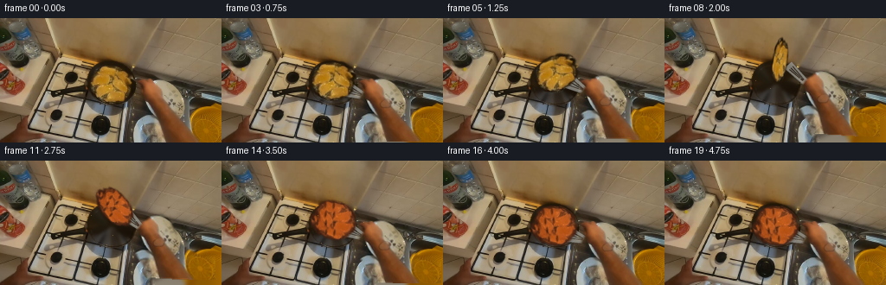
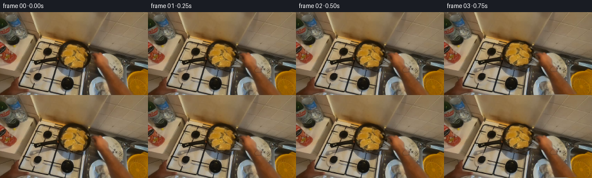

CODING AGENTS AS PIXEL WORLD MODELS
traex/GPT-5.6-Sol · common50_0028
点击播放 · 原生 RGB 像素
逐轮保存的候选
回放视频、检查图与代码变化。
每份候选均可单独播放。实际图片检查记录在下方工具轨迹中。
候选 01播放与检查图
点击播放 · 原生 RGB 像素


展开代码变化
--- 上一保存版本
+++ 本次保存版本
@@ -0,0 +1,262 @@
+from pathlib import Path
+import math
+import numpy as np
+from PIL import Image, ImageDraw, ImageFilter
+from scipy import ndimage as ndi
+import artifact_io
+
+CASE_DIR = Path(__file__).resolve().parent
+W, H, N = 256, 144, 20
+RES = Image.Resampling.BICUBIC
+
+
+def smoothstep(x):
+ x = max(0.0, min(1.0, float(x)))
+ return x * x * (3.0 - 2.0 * x)
+
+
+def polygon_mask(points, blur=1.3):
+ m = Image.new("L", (W, H), 0)
+ ImageDraw.Draw(m).polygon(points, fill=255)
+ if blur:
+ m = m.filter(ImageFilter.GaussianBlur(blur))
+ return np.asarray(m, dtype=np.float32) / 255.0
+
+
+def inpaint_nearest(rgb, mask, soften=2.0):
+ """Texture-preserving local fill, only used beneath moved objects."""
+ inside = mask > 0.08
+ _, inds = ndi.distance_transform_edt(inside, return_indices=True)
+ nearest = rgb[inds[0], inds[1]].astype(np.float32)
+ # Suppress the characteristic hard Voronoi seams of nearest filling.
+ soft = ndi.gaussian_filter(nearest, sigma=(soften, soften, 0))
+ dist = ndi.distance_transform_edt(inside)
+ mix = np.clip(dist / 4.0, 0, 1)[..., None]
+ fill = nearest * (1 - mix) + soft * mix
+ a = np.clip(mask[..., None] * 1.10, 0, 1)
+ return np.uint8(np.clip(rgb * (1 - a) + fill * a, 0, 255))
+
+
+def transformed_layer(rgb, alpha, dx=0, dy=0, angle=0, center=(128,72)):
+ """Rotate a full-resolution RGBA cutout around center then translate."""
+ rgba = np.dstack((rgb, np.uint8(np.clip(alpha * 255, 0, 255))))
+ lay = Image.fromarray(rgba, "RGBA")
+ lay = lay.rotate(angle, resample=RES, center=center, expand=False)
+ if abs(dx) > 1e-5 or abs(dy) > 1e-5:
+ # PIL affine maps output to input; negative coefficients move forward.
+ lay = lay.transform((W, H), Image.Transform.AFFINE,
+ (1, 0, -dx, 0, 1, -dy), resample=RES)
+ return lay
+
+
+def composite_np(base, layer):
+ return np.asarray(Image.alpha_composite(Image.fromarray(base, "RGB").convert("RGBA"), layer).convert("RGB"))
+
+
+def make_meat_layer(src, meat_alpha, center, angle, yscale, underside, frame_no):
+ ys, xs = np.where(meat_alpha > 0.02)
+ x0, x1 = xs.min()-4, xs.max()+5
+ y0, y1 = ys.min()-4, ys.max()+5
+ x0, y0 = max(x0,0), max(y0,0)
+ x1, y1 = min(x1,W), min(y1,H)
+ patch = src[y0:y1, x0:x1].astype(np.float32).copy()
+ a = meat_alpha[y0:y1, x0:x1]
+
+ if underside > 0:
+ # A browned, seared underside; retain all photographic texture.
+ lum = patch.mean(axis=2)
+ browned = np.empty_like(patch)
+ browned[...,0] = 0.72 * patch[...,0] + 42 + 0.10 * lum
+ browned[...,1] = 0.45 * patch[...,1] + 23 + 0.05 * lum
+ browned[...,2] = 0.34 * patch[...,2] + 16
+ patch = patch * (1-underside) + browned * underside
+ # Irregular dark grill/sear streaks, clipped by alpha.
+ yy, xx = np.mgrid[0:patch.shape[0], 0:patch.shape[1]]
+ streak = np.zeros(a.shape, np.float32)
+ for off in (-9, 1, 11):
+ d = np.abs((xx - 0.28*yy) - (patch.shape[1]/2 + off))
+ streak = np.maximum(streak, np.exp(-(d/1.25)**2))
+ mottled = (0.5 + 0.5*np.sin(xx*0.73 + yy*0.41 + frame_no*.07))
+ q = np.clip(streak * mottled * a * underside, 0, .58)[...,None]
+ patch = patch*(1-q) + np.array([52,25,14],np.float32)*q
+ patch = np.uint8(np.clip(patch,0,255))
+ rgba = Image.fromarray(np.dstack((patch, np.uint8(a*255))), "RGBA")
+ nw = max(3, rgba.width)
+ nh = max(2, int(round(rgba.height * yscale)))
+ rgba = rgba.resize((nw, nh), RES)
+ rgba = rgba.rotate(angle, resample=RES, expand=True)
+ layer = Image.new("RGBA", (W,H), (0,0,0,0))
+ px = int(round(center[0] - rgba.width/2))
+ py = int(round(center[1] - rgba.height/2))
+ layer.alpha_composite(rgba, (px,py))
+ return layer
+
+
+def draw_utensil_and_shadow(frame, meat_center, edge_factor, grip, lift, opacity=1.0):
+ """Antialiased stainless turner, handle, contact shadow and pan highlights."""
+ S=3
+ ov = Image.new("RGBA", (W*S,H*S), (0,0,0,0))
+ d = ImageDraw.Draw(ov, "RGBA")
+ def P(p): return tuple(int(round(v*S)) for v in p)
+ cx,cy=meat_center
+ gx,gy=grip
+ # Soft airborne shadow on the pan, widening and fading with height.
+ sh = Image.new("RGBA", (W*S,H*S), (0,0,0,0))
+ sd = ImageDraw.Draw(sh, "RGBA")
+ sw=23+7*lift; shh=5+2*lift
+ sd.ellipse((int((cx-sw)*S),int((87-shh)*S),int((cx+sw)*S),int((87+shh)*S)),
+ fill=(4,3,2,int((72-38*lift)*opacity)))
+ sh=sh.filter(ImageFilter.GaussianBlur(3.0*S))
+ ov=Image.alpha_composite(ov,sh); d=ImageDraw.Draw(ov,"RGBA")
+
+ # Blade remains under the near edge of the meat and tilts up during lift.
+ bx,by = cx+9, cy+4+3*edge_factor
+ ux,uy = gx-bx, gy-by
+ L=max(1,math.hypot(ux,uy)); nx,ny=-uy/L,ux/L
+ blade_len=29; blade_w=11*(0.40+0.60*edge_factor)
+ ex,ey=bx+ux/L*blade_len, by+uy/L*blade_len
+ blade=[(bx+nx*blade_w,by+ny*blade_w),(bx-nx*blade_w,by-ny*blade_w),
+ (ex-nx*4,ey-ny*4),(ex+nx*4,ey+ny*4)]
+ d.polygon([P(p) for p in blade], fill=(157,157,150,int(210*opacity)),
+ outline=(54,51,45,int(220*opacity)))
+ # brushed-metal highlight and slots
+ d.line([P((bx+nx*blade_w*.45,by+ny*blade_w*.45)),P((ex+nx*2,ey+ny*2))],
+ fill=(225,222,208,int(150*opacity)),width=1*S)
+ for k in (-.45,0,.45):
+ sx,sy=bx+nx*blade_w*k+ux/L*5,by+ny*blade_w*k+uy/L*5
+ tx,ty=ex+nx*2*k-ux/L*4,ey+ny*2*k-uy/L*4
+ d.line([P((sx,sy)),P((tx,ty))],fill=(61,58,51,int(115*opacity)),width=1*S)
+ # neck and dark heatproof handle; subtle highlight gives cylindrical shape.
+ d.line([P((ex,ey)),P((gx,gy))],fill=(24,22,18,int(245*opacity)),width=5*S)
+ d.line([P((ex,ey-1)),P((gx,gy-1))],fill=(77,70,58,int(175*opacity)),width=1*S)
+ # silver collar at the hand
+ hx= gx+(ex-gx)*.13; hy=gy+(ey-gy)*.13
+ d.line([P((hx,hy)),P((gx+(ex-gx)*.25,gy+(ey-gy)*.25))],
+ fill=(178,173,158,int(210*opacity)),width=4*S)
+ ov=ov.resize((W,H),RES)
+ return composite_np(frame,ov)
+
+
+def add_steam(frame, f, intensity):
+ if intensity <= 0: return frame
+ S=3
+ ov=Image.new("RGBA",(W*S,H*S),(0,0,0,0)); d=ImageDraw.Draw(ov,"RGBA")
+ for j,x0 in enumerate((113,133,151)):
+ pts=[]
+ phase=f*.42+j*1.7
+ for k in range(13):
+ y=61-k*2.4
+ x=x0+2.8*math.sin(k*.55+phase)+1.2*math.sin(k*.19+phase)
+ pts.append((int(x*S),int(y*S)))
+ d.line(pts,fill=(234,230,214,int(46*intensity)),width=1*S)
+ ov=ov.filter(ImageFilter.GaussianBlur(1.1*S)).resize((W,H),RES)
+ return composite_np(frame,ov)
+
+
+def main():
+ src=np.asarray(Image.open(CASE_DIR/"first_frame.png").convert("RGB"),dtype=np.uint8)
+ assert src.shape==(H,W,3)
+ R,G,B=[src[...,i].astype(np.float32) for i in range(3)]
+ yy,xx=np.mgrid[0:H,0:W]
+
+ # Meat is the warm connected object centered in the black pan.
+ roi=((xx-129)/27.0)**2+((yy-76)/23.0)**2 < 1
+ warm=roi & (R>105) & (R>1.22*G) & (G>1.35*(B+2))
+ warm=ndi.binary_closing(warm,iterations=3)
+ warm=ndi.binary_dilation(warm,iterations=2)
+ labels,num=ndi.label(warm)
+ # component nearest pan center
+ best=0; bestscore=1e9
+ for k in range(1,num+1):
+ ys,xs=np.where(labels==k)
+ if len(xs)<30: continue
+ score=(xs.mean()-129)**2+(ys.mean()-76)**2-len(xs)*.02
+ if score<bestscore: bestscore,best=score,k
+ mm=labels==best
+ mm=ndi.binary_fill_holes(ndi.binary_closing(mm,iterations=2))
+ # Recover dark browned edge within a tight expansion of the warm center.
+ mm=ndi.binary_dilation(mm,iterations=3) & roi
+ meat_alpha=ndi.gaussian_filter(mm.astype(np.float32),1.0)
+ meat_alpha=np.clip(meat_alpha,0,1)
+ ys,xs=np.where(mm); orig_center=(float(xs.mean()),float(ys.mean()))
+
+ # Right hand and forearm enter egocentrically from lower right.
+ hand_poly=[(256,144),(181,144),(176,135),(171,128),(166,121),(160,111),
+ (158,101),(161,91),(168,82),(178,73),(189,69),(199,75),
+ (205,87),(210,98),(222,108),(238,115),(256,116)]
+ hand_alpha=polygon_mask(hand_poly,1.25)
+ # Avoid cutting any overlap with the food itself.
+ hand_alpha*=1-np.clip(meat_alpha*1.2,0,1)
+
+ cleared=inpaint_nearest(src,meat_alpha,1.7)
+ cleared=inpaint_nearest(cleared,hand_alpha,2.4)
+
+ frames=[]
+ for f in range(N):
+ if f==0:
+ frames.append(src.copy()); continue
+ # A complete lift-turn-land cycle, with a short settle at the end.
+ s=smoothstep((f-1)/15.5)
+ lift=math.sin(math.pi*s)
+ edge=abs(math.cos(math.pi*s))
+ # Wrist/hand follows through up and toward pan, then returns.
+ hdx=-8.0*lift + 1.0*math.sin(s*math.pi*2)
+ hdy=-7.0*lift
+ hang=-3.8*lift
+ grip=(190+hdx,101+hdy)
+
+ # Base scene with only tiny warm exposure breathing from stove light.
+ frame=cleared.copy()
+ if f<2:
+ # At frame 1 retain near-perfect temporal continuity.
+ continuity=smoothstep(f/2)
+ else: continuity=1.0
+
+ center=(orig_center[0]+5.0*math.sin(math.pi*s),
+ orig_center[1]-28.0*lift+1.4*math.sin(2*math.pi*s))
+ yscale=0.20+0.80*edge
+ # In-plane twist accentuates the actual turnover.
+ angle=8*lift + 176*s
+ underside=smoothstep((s-.46)/.18)
+
+ # Spatula is behind both meat and fingers.
+ frame=draw_utensil_and_shadow(frame,center,edge,grip,lift,opacity=.90)
+ meat_layer=make_meat_layer(src,meat_alpha,center,angle,yscale,underside,f)
+ frame=composite_np(frame,meat_layer)
+
+ # Move the original photographic hand as a coherent cutout.
+ hand_layer=transformed_layer(src,hand_alpha,hdx,hdy,hang,center=(235,139))
+ frame=composite_np(frame,hand_layer)
+
+ # A thumb/finger wrap over the utensil handle makes the grasp legible.
+ S=3; ov=Image.new("RGBA",(W*S,H*S),(0,0,0,0)); d=ImageDraw.Draw(ov,"RGBA")
+ skin=src[92:112,176:201].reshape(-1,3).mean(0)
+ col=tuple(int(v) for v in skin)
+ gx,gy=grip
+ d.rounded_rectangle((int((gx-6)*S),int((gy-4)*S),int((gx+7)*S),int((gy+4)*S)),
+ radius=4*S,fill=col+(145,),outline=(74,43,27,105),width=S)
+ d.ellipse((int((gx-3)*S),int((gy-6)*S),int((gx+8)*S),int((gy+1)*S)),
+ fill=(min(col[0]+18,255),min(col[1]+12,255),min(col[2]+9,255),105))
+ ov=ov.filter(ImageFilter.GaussianBlur(.35*S)).resize((W,H),RES)
+ frame=composite_np(frame,ov)
+
+ # Wisps intensify after the newly seared side lands.
+ steam_strength=(0.25+0.65*underside)*(0.65+0.35*math.sin(math.pi*s))
+ frame=add_steam(frame,f,steam_strength)
+
+ # Very subtle hot-oil glints localized inside the pan.
+ if 5<=f<=15:
+ ov=Image.new("RGBA",(W,H),(0,0,0,0)); d=ImageDraw.Draw(ov,"RGBA")
+ for j in range(5):
+ a=(f*.71+j*2.33)
+ x=int(129+39*math.cos(a)); y=int(81+18*math.sin(a*1.17))
+ d.point((x,y),fill=(238,190,91,80))
+ frame=composite_np(frame,ov)
+ frames.append(np.ascontiguousarray(frame,dtype=np.uint8))
+
+ frames=np.stack(frames,axis=0)
+ assert np.array_equal(frames[0],src)
+ artifact_io.save(frames,CASE_DIR)
+
+if __name__=="__main__":
+ main()
可观测工具轨迹
实际执行的命令与返回图片。
命令 1exit 0
/bin/bash -lc "cat GENERATION_RULES.md && printf '\\n---PROMPT---\\n' && cat prompt.txt"
命令 2exit 127
/bin/bash -lc "find . -maxdepth 2 -type f -printf '%p %s bytes\\n' | sort && file first_frame.png"
命令 3exit 0
/bin/bash -lc "cat task_spec.json && sed -n '1,240p' artifact_io.py"
命令 4exit 0
/bin/bash -lc "python3 - <<'PY'
from PIL import Image
import numpy as np
im=np.array(Image.open('first_frame.png').convert('RGB'))
print(im.shape, im.dtype, im.min(), im.max(), im.mean((0,1)), im.std((0,1)))
# spatial blocks avg RGB, 8x8
h,w,_=im.shape
for yy in range(0,h,18):
print('row',yy, ['%02x%02x%02x'%tuple(im[yy:min(yy+18,h),x:min(x+32,w)].mean((0,1)).astype(int)) for x in range(0,w,32)])
# quantized dominant colors
q=(im//32).reshape(-1,3)
u,c=np.unique(q,axis=0,return_counts=True)
for j in np.argsort(c)[-20:][::-1]: print(c[j], tuple((u[j]*32+16).tolist()))
PY"命令 5exit 2
/bin/bash -lc "cat > /tmp/analyze.py <<'PY'
from PIL import Image
import numpy as np
im=np.array(Image.open('first_frame.png').convert('RGB')).astype(float)
h,w,_=im.shape
# kmeans sampled with RGB + weak location? plain RGB
X=im.reshape(-1,3)
rng=np.random.default_rng(2); C=X[rng.choice(len(X),14,False)]
for it in range(40):
d=((X[:,None]-C[None])**2).sum(2); lab=d.argmin(1)
C2=np.array([X[lab==i].mean(0) if np.any(lab==i) else C[i] for i in range(len(C))])
if np.max(abs(C2-C))<.1: break
C=C2
n=np.bincount(lab,minlength=len(C)); order=np.argsort(C.mean(1)); chars='0123456789ABCD'
print('clusters dark->bright')
for j,i in enumerate(order): print(chars[j], n[i], C[i].round().astype(int))
mp=np.zeros(len(C),int); mp[order]=np.arange(len(C)); L=mp[lab].reshape(h,w)
# block majority 4x4
for y in range(0,h,4):
s=''
for x in range(0,w,4):
q=L[y:y+4,x:x+4]; z=np.bincount(q.ravel(),minlength=14); s+=chars[z.argmax()]
print(f'{y:03d} '+s)
# HSV custom categories every 4 block based avg
print('\\nHSV map: K dark, W graybright, r/R red-orange, y yellow/brown, g green, b blue')
rgb=im/255; mx=rgb.max(2); mn=rgb.min(2); df=mx-mn
hue=np.zeros((h,w)); m=df>0
ix=(mx==rgb[:,:,0])&m; hue[ix]=(60*((rgb[:,:,1][ix]-rgb[:,:,2][ix])/df[ix])+360)%360
ix=(mx==rgb[:,:,1])&m; hue[ix]=60*((rgb[:,:,2][ix]-rgb[:,:,0][ix])/df[ix]+2)
ix=(mx==rgb[:,:,2])&m; hue[ix]=60*((rgb[:,:,0][ix]-rgb[:,:,1][ix])/df[ix]+4)
sat=np.divide(df,mx,out=np.zeros_like(df),where=mx>0)
for y in range(0,h,4):
s=''
for x in range(0,w,4):
H=np.median(hue[y:y+4,x:x+4]); S=np.median(sat[y:y+4,x:x+4]); V=np.median(mx[y:y+4,x:x+4])
if V<.20: c='K'
elif S<.12: c='W' if V>.62 else 'w'
elif H<15 or H>=345: c='R'
elif H<45: c='o' if S>.5 else 'r'
elif H<75: c='y'
elif H<165: c='g'
elif H<260: c='b'
else: c='p'
s+=c
print(f'{y:03d} '+s)
PY
python3 /tmp/analyze.py"命令 6exit 0
/bin/bash -lc "cat > .tmp/analyze.py <<'PY'
from PIL import Image
import numpy as np
im=np.array(Image.open('first_frame.png').convert('RGB')).astype(float)
h,w,_=im.shape
X=im.reshape(-1,3); rng=np.random.default_rng(2); C=X[rng.choice(len(X),14,False)]
for it in range(40):
d=((X[:,None]-C[None])**2).sum(2); lab=d.argmin(1)
C2=np.array([X[lab==i].mean(0) if np.any(lab==i) else C[i] for i in range(len(C))])
if np.max(abs(C2-C))<.1: break
C=C2
n=np.bincount(lab,minlength=len(C)); order=np.argsort(C.mean(1)); chars='0123456789ABCD'
print('clusters dark->bright')
for j,i in enumerate(order): print(chars[j], n[i], C[i].round().astype(int))
mp=np.zeros(len(C),int); mp[order]=np.arange(len(C)); L=mp[lab].reshape(h,w)
for y in range(0,h,4):
s=''
for x in range(0,w,4):
q=L[y:y+4,x:x+4]; z=np.bincount(q.ravel(),minlength=14); s+=chars[z.argmax()]
print(f'{y:03d} '+s)
print('\\nHSV map')
rgb=im/255; mx=rgb.max(2); mn=rgb.min(2); df=mx-mn
hue=np.zeros((h,w)); m=df>0
ix=(mx==rgb[:,:,0])&m; hue[ix]=(60*((rgb[:,:,1][ix]-rgb[:,:,2][ix])/df[ix])+360)%360
ix=(mx==rgb[:,:,1])&m; hue[ix]=60*((rgb[:,:,2][ix]-rgb[:,:,0][ix])/df[ix]+2)
ix=(mx==rgb[:,:,2])&m; hue[ix]=60*((rgb[:,:,0][ix]-rgb[:,:,1][ix])/df[ix]+4)
sat=np.divide(df,mx,out=np.zeros_like(df),where=mx>0)
for y in range(0,h,4):
s=''
for x in range(0,w,4):
H=np.median(hue[y:y+4,x:x+4]); S=np.median(sat[y:y+4,x:x+4]); V=np.median(mx[y:y+4,x:x+4])
if V<.20: c='K'
elif S<.12: c='W' if V>.62 else 'w'
elif H<15 or H>=345: c='R'
elif H<45: c='o' if S>.5 else 'r'
elif H<75: c='y'
elif H<165: c='g'
elif H<260: c='b'
else: c='p'
s+=c
print(f'{y:03d} '+s)
PY
python3 .tmp/analyze.py"命令 7exit 0
/bin/bash -lc "python3 - <<'PY'
from PIL import Image
import numpy as np
im=np.array(Image.open('first_frame.png').convert('RGB')).astype(float)
y=.2126*im[:,:,0]+.7152*im[:,:,1]+.0722*im[:,:,2]
# 2x2 avg luminance chars
chars=' .,:;irsXA253hMHGS#9B&@'
for yy in range(0,144,2):
s=''
for x in range(0,256,2):
z=y[yy:yy+2,x:x+2].mean(); s+=chars[min(len(chars)-1,int(z/244*len(chars)))]
print(s)
PY"命令 8exit 0
/bin/bash -lc "python3 - <<'PY'
from PIL import Image
import numpy as np
im=np.array(Image.open('first_frame.png').convert('RGB'))
# For grid cells 8x8 print avg RGB on central/lower
for y in range(32,145,8):
print('y',y)
for x in range(0,256,8):
a=im[y:min(y+8,144),x:x+8].mean((0,1)).astype(int)
print('%d,%d,%d'%tuple(a),end=' | ')
print()
PY"命令 9exit 0
/bin/bash -lc "python3 - <<'PY'
import numpy as np
from PIL import Image
from scipy import ndimage as ndi
im=np.array(Image.open('first_frame.png').convert('RGB'))
R,G,B=im.transpose(2,0,1); V=im.max(2); mn=im.min(2); sat=(V-mn)/(V+1e-6)
conds={
'dark':V<65,
'nearblack':V<45,
'orange':(R>120)&(R>G*1.25)&(G>B*1.35),
'gold':(R>130)&(G>80)&(B<40)&(R>G*1.25),
'skin':(R>125)&(G>65)&(G<145)&(B>30)&(B<110)&(R>G*1.18)&(G>B*1.15),
'neutral_bright':(V>135)&(sat<.22),
'bluegrey':(B>=R*.9)&(G>=R*.95)&(V>65)
}
for name,m in conds.items():
m=ndi.binary_closing(m,iterations=1)
l,n=ndi.label(m)
comps=[]
for i in range(1,n+1):
ys,xs=np.where(l==i); z=len(xs)
if z>=15: comps.append((z,(xs.min(),ys.min(),xs.max(),ys.max()),(xs.mean(),ys.mean())))
print('\\n',name,m.sum(),len(comps))
for x in sorted(comps,reverse=True)[:30]: print(x)
PY"命令 10exit 0
/bin/bash -lc "python3 - <<'PY'
from PIL import Image
import numpy as np
from scipy.ndimage import gaussian_filter
im=np.array(Image.open('first_frame.png').convert('RGB')).astype(float)/255
# color edge sobel gaussian
for title,(x0,x1,y0,y1) in {'scene':(0,256,35,144),'focus':(64,256,40,144)}.items():
g=gaussian_filter(im,1)
dx=np.linalg.norm(np.diff(g,axis=1,prepend=g[:,:1]),axis=2); dy=np.linalg.norm(np.diff(g,axis=0,prepend=g[:1]),axis=2)
e=np.hypot(dx,dy)
chars=' .-+=*#@'
print('\\n',title)
step=2
for y in range(y0,y1,step):
s=''
for x in range(x0,x1,step):
z=e[y:y+step,x:x+step].max()
s+=chars[min(len(chars)-1,int(z/.32*len(chars)))]
print(s.rstrip())
PY"命令 11exit 0
/bin/bash -lc "cat > generate.py <<'PY'
from pathlib import Path
import math
import numpy as np
from PIL import Image, ImageDraw, ImageFilter
from scipy import ndimage as ndi
import artifact_io
CASE_DIR = Path(__file__).resolve().parent
W, H, N = 256, 144, 20
RES = Image.Resampling.BICUBIC
def smoothstep(x):
x = max(0.0, min(1.0, float(x)))
return x * x * (3.0 - 2.0 * x)
def polygon_mask(points, blur=1.3):
m = Image.new(\"L\", (W, H), 0)
ImageDraw.Draw(m).polygon(points, fill=255)
if blur:
m = m.filter(ImageFilter.GaussianBlur(blur))
return np.asarray(m, dtype=np.float32) / 255.0
def inpaint_nearest(rgb, mask, soften=2.0):
\"\"\"Texture-preserving local fill, only used beneath moved objects.\"\"\"
inside = mask > 0.08
_, inds = ndi.distance_transform_edt(inside, return_indices=True)
nearest = rgb[inds[0], inds[1]].astype(np.float32)
# Suppress the characteristic hard Voronoi seams of nearest filling.
soft = ndi.gaussian_filter(nearest, sigma=(soften, soften, 0))
dist = ndi.distance_transform_edt(inside)
mix = np.clip(dist / 4.0, 0, 1)[..., None]
fill = nearest * (1 - mix) + soft * mix
a = np.clip(mask[..., None] * 1.10, 0, 1)
return np.uint8(np.clip(rgb * (1 - a) + fill * a, 0, 255))
def transformed_layer(rgb, alpha, dx=0, dy=0, angle=0, center=(128,72)):
\"\"\"Rotate a full-resolution RGBA cutout around center then translate.\"\"\"
rgba = np.dstack((rgb, np.uint8(np.clip(alpha * 255, 0, 255))))
lay = Image.fromarray(rgba, \"RGBA\")
lay = lay.rotate(angle, resample=RES, center=center, expand=False)
if abs(dx) > 1e-5 or abs(dy) > 1e-5:
# PIL affine maps output to input; negative coefficients move forward.
lay = lay.transform((W, H), Image.Transform.AFFINE,
(1, 0, -dx, 0, 1, -dy), resample=RES)
return lay
def composite_np(base, layer):
return np.asarray(Image.alpha_composite(Image.fromarray(base, \"RGB\").convert(\"RGBA\"), layer).convert(\"RGB\"))
def make_meat_layer(src, meat_alpha, center, angle, yscale, underside, frame_no):
ys, xs = np.where(meat_alpha > 0.02)
x0, x1 = xs.min()-4, xs.max()+5
y0, y1 = ys.min()-4, ys.max()+5
x0, y0 = max(x0,0), max(y0,0)
x1, y1 = min(x1,W), min(y1,H)
patch = src[y0:y1, x0:x1].astype(np.float32).copy()
a = meat_alpha[y0:y1, x0:x1]
if underside > 0:
# A browned, seared underside; retain all photographic texture.
lum = patch.mean(axis=2)
browned = np.empty_like(patch)
browned[...,0] = 0.72 * patch[...,0] + 42 + 0.10 * lum
browned[...,1] = 0.45 * patch[...,1] + 23 + 0.05 * lum
browned[...,2] = 0.34 * patch[...,2] + 16
patch = patch * (1-underside) + browned * underside
# Irregular dark grill/sear streaks, clipped by alpha.
yy, xx = np.mgrid[0:patch.shape[0], 0:patch.shape[1]]
streak = np.zeros(a.shape, np.float32)
for off in (-9, 1, 11):
d = np.abs((xx - 0.28*yy) - (patch.shape[1]/2 + off))
streak = np.maximum(streak, np.exp(-(d/1.25)**2))
mottled = (0.5 + 0.5*np.sin(xx*0.73 + yy*0.41 + frame_no*.07))
q = np.clip(streak * mottled * a * underside, 0, .58)[...,None]
patch = patch*(1-q) + np.array([52,25,14],np.float32)*q
patch = np.uint8(np.clip(patch,0,255))
rgba = Image.fromarray(np.dstack((patch, np.uint8(a*255))), \"RGBA\")
nw = max(3, rgba.width)
nh = max(2, int(round(rgba.height * yscale)))
rgba = rgba.resize((nw, nh), RES)
rgba = rgba.rotate(angle, resample=RES, expand=True)
layer = Image.new(\"RGBA\", (W,H), (0,0,0,0))
px = int(round(center[0] - rgba.width/2))
py = int(round(center[1] - rgba.height/2))
layer.alpha_composite(rgba, (px,py))
return layer
def draw_utensil_and_shadow(frame, meat_center, edge_factor, grip, lift, opacity=1.0):
\"\"\"Antialiased stainless turner, handle, contact shadow and pan highlights.\"\"\"
S=3
ov = Image.new(\"RGBA\", (W*S,H*S), (0,0,0,0))
d = ImageDraw.Draw(ov, \"RGBA\")
def P(p): return tuple(int(round(v*S)) for v in p)
cx,cy=meat_center
gx,gy=grip
# Soft airborne shadow on the pan, widening and fading with height.
sh = Image.new(\"RGBA\", (W*S,H*S), (0,0,0,0))
sd = ImageDraw.Draw(sh, \"RGBA\")
sw=23+7*lift; shh=5+2*lift
sd.ellipse((int((cx-sw)*S),int((87-shh)*S),int((cx+sw)*S),int((87+shh)*S)),
fill=(4,3,2,int((72-38*lift)*opacity)))
sh=sh.filter(ImageFilter.GaussianBlur(3.0*S))
ov=Image.alpha_composite(ov,sh); d=ImageDraw.Draw(ov,\"RGBA\")
# Blade remains under the near edge of the meat and tilts up during lift.
bx,by = cx+9, cy+4+3*edge_factor
ux,uy = gx-bx, gy-by
L=max(1,math.hypot(ux,uy)); nx,ny=-uy/L,ux/L
blade_len=29; blade_w=11*(0.40+0.60*edge_factor)
ex,ey=bx+ux/L*blade_len, by+uy/L*blade_len
blade=[(bx+nx*blade_w,by+ny*blade_w),(bx-nx*blade_w,by-ny*blade_w),
(ex-nx*4,ey-ny*4),(ex+nx*4,ey+ny*4)]
d.polygon([P(p) for p in blade], fill=(157,157,150,int(210*opacity)),
outline=(54,51,45,int(220*opacity)))
# brushed-metal highlight and slots
d.line([P((bx+nx*blade_w*.45,by+ny*blade_w*.45)),P((ex+nx*2,ey+ny*2))],
fill=(225,222,208,int(150*opacity)),width=1*S)
for k in (-.45,0,.45):
sx,sy=bx+nx*blade_w*k+ux/L*5,by+ny*blade_w*k+uy/L*5
tx,ty=ex+nx*2*k-ux/L*4,ey+ny*2*k-uy/L*4
d.line([P((sx,sy)),P((tx,ty))],fill=(61,58,51,int(115*opacity)),width=1*S)
# neck and dark heatproof handle; subtle highlight gives cylindrical shape.
d.line([P((ex,ey)),P((gx,gy))],fill=(24,22,18,int(245*opacity)),width=5*S)
d.line([P((ex,ey-1)),P((gx,gy-1))],fill=(77,70,58,int(175*opacity)),width=1*S)
# silver collar at the hand
hx= gx+(ex-gx)*.13; hy=gy+(ey-gy)*.13
d.line([P((hx,hy)),P((gx+(ex-gx)*.25,gy+(ey-gy)*.25))],
fill=(178,173,158,int(210*opacity)),width=4*S)
ov=ov.resize((W,H),RES)
return composite_np(frame,ov)
def add_steam(frame, f, intensity):
if intensity <= 0: return frame
S=3
ov=Image.new(\"RGBA\",(W*S,H*S),(0,0,0,0)); d=ImageDraw.Draw(ov,\"RGBA\")
for j,x0 in enumerate((113,133,151)):
pts=[]
phase=f*.42+j*1.7
for k in range(13):
y=61-k*2.4
x=x0+2.8*math.sin(k*.55+phase)+1.2*math.sin(k*.19+phase)
pts.append((int(x*S),int(y*S)))
d.line(pts,fill=(234,230,214,int(46*intensity)),width=1*S)
ov=ov.filter(ImageFilter.GaussianBlur(1.1*S)).resize((W,H),RES)
return composite_np(frame,ov)
def main():
src=np.asarray(Image.open(CASE_DIR/\"first_frame.png\").convert(\"RGB\"),dtype=np.uint8)
assert src.shape==(H,W,3)
R,G,B=[src[...,i].astype(np.float32) for i in range(3)]
yy,xx=np.mgrid[0:H,0:W]
# Meat is the warm connected object centered in the black pan.
roi=((xx-129)/27.0)**2+((yy-76)/23.0)**2 < 1
warm=roi & (R>105) & (R>1.22*G) & (G>1.35*(B+2))
warm=ndi.binary_closing(warm,iterations=3)
warm=ndi.binary_dilation(warm,iterations=2)
labels,num=ndi.label(warm)
# component nearest pan center
best=0; bestscore=1e9
for k in range(1,num+1):
ys,xs=np.where(labels==k)
if len(xs)<30: continue
score=(xs.mean()-129)**2+(ys.mean()-76)**2-len(xs)*.02
if score<bestscore: bestscore,best=score,k
mm=labels==best
mm=ndi.binary_fill_holes(ndi.binary_closing(mm,iterations=2))
# Recover dark browned edge within a tight expansion of the warm center.
mm=ndi.binary_dilation(mm,iterations=3) & roi
meat_alpha=ndi.gaussian_filter(mm.astype(np.float32),1.0)
meat_alpha=np.clip(meat_alpha,0,1)
ys,xs=np.where(mm); orig_center=(float(xs.mean()),float(ys.mean()))
# Right hand and forearm enter egocentrically from lower right.
hand_poly=[(256,144),(181,144),(176,135),(171,128),(166,121),(160,111),
(158,101),(161,91),(168,82),(178,73),(189,69),(199,75),
(205,87),(210,98),(222,108),(238,115),(256,116)]
hand_alpha=polygon_mask(hand_poly,1.25)
# Avoid cutting any overlap with the food itself.
hand_alpha*=1-np.clip(meat_alpha*1.2,0,1)
cleared=inpaint_nearest(src,meat_alpha,1.7)
cleared=inpaint_nearest(cleared,hand_alpha,2.4)
frames=[]
for f in range(N):
if f==0:
frames.append(src.copy()); continue
# A complete lift-turn-land cycle, with a short settle at the end.
s=smoothstep((f-1)/15.5)
lift=math.sin(math.pi*s)
edge=abs(math.cos(math.pi*s))
# Wrist/hand follows through up and toward pan, then returns.
hdx=-8.0*lift + 1.0*math.sin(s*math.pi*2)
hdy=-7.0*lift
hang=-3.8*lift
grip=(190+hdx,101+hdy)
# Base scene with only tiny warm exposure breathing from stove light.
frame=cleared.copy()
if f<2:
# At frame 1 retain near-perfect temporal continuity.
continuity=smoothstep(f/2)
else: continuity=1.0
center=(orig_center[0]+5.0*math.sin(math.pi*s),
orig_center[1]-28.0*lift+1.4*math.sin(2*math.pi*s))
yscale=0.20+0.80*edge
# In-plane twist accentuates the actual turnover.
angle=8*lift + 176*s
underside=smoothstep((s-.46)/.18)
# Spatula is behind both meat and fingers.
frame=draw_utensil_and_shadow(frame,center,edge,grip,lift,opacity=.90)
meat_layer=make_meat_layer(src,meat_alpha,center,angle,yscale,underside,f)
frame=composite_np(frame,meat_layer)
# Move the original photographic hand as a coherent cutout.
hand_layer=transformed_layer(src,hand_alpha,hdx,hdy,hang,center=(235,139))
frame=composite_np(frame,hand_layer)
# A thumb/finger wrap over the utensil handle makes the grasp legible.
S=3; ov=Image.new(\"RGBA\",(W*S,H*S),(0,0,0,0)); d=ImageDraw.Draw(ov,\"RGBA\")
skin=src[92:112,176:201].reshape(-1,3).mean(0)
col=tuple(int(v) for v in skin)
gx,gy=grip
d.rounded_rectangle((int((gx-6)*S),int((gy-4)*S),int((gx+7)*S),int((gy+4)*S)),
radius=4*S,fill=col+(145,),outline=(74,43,27,105),width=S)
d.ellipse((int((gx-3)*S),int((gy-6)*S),int((gx+8)*S),int((gy+1)*S)),
fill=(min(col[0]+18,255),min(col[1]+12,255),min(col[2]+9,255),105))
ov=ov.filter(ImageFilter.GaussianBlur(.35*S)).resize((W,H),RES)
frame=composite_np(frame,ov)
# Wisps intensify after the newly seared side lands.
steam_strength=(0.25+0.65*underside)*(0.65+0.35*math.sin(math.pi*s))
frame=add_steam(frame,f,steam_strength)
# Very subtle hot-oil glints localized inside the pan.
if 5<=f<=15:
ov=Image.new(\"RGBA\",(W,H),(0,0,0,0)); d=ImageDraw.Draw(ov,\"RGBA\")
for j in range(5):
a=(f*.71+j*2.33)
x=int(129+39*math.cos(a)); y=int(81+18*math.sin(a*1.17))
d.point((x,y),fill=(238,190,91,80))
frame=composite_np(frame,ov)
frames.append(np.ascontiguousarray(frame,dtype=np.uint8))
frames=np.stack(frames,axis=0)
assert np.array_equal(frames[0],src)
artifact_io.save(frames,CASE_DIR)
if __name__==\"__main__\":
main()
PY
python3 generate.py
python3 - <<'PY'
from PIL import Image
import numpy as np, os
z=np.load('pixels.npz')['pixels']
print('pixels',z.shape,z.dtype,'frames',len(os.listdir('frames')))
a=np.array(Image.open('first_frame.png').convert('RGB')); b=np.array(Image.open('frames/00.png').convert('RGB'))
print('frame0 exact',np.array_equal(a,b))
for i in range(20):
q=np.array(Image.open(f'frames/{i:02d}.png'))
if i: print(i, 'changed',np.count_nonzero(np.any(q"'!=a,axis=2)), '"'meanabs',np.abs(q.astype(int)-a).mean().round(2))
PY"命令 12exit 0
/bin/bash -lc "python3 - <<'PY'
# Recompute key masks and temporal diagnostics, without reading generated artifacts visually.
from PIL import Image
import numpy as np
from scipy import ndimage as ndi
im=np.array(Image.open('first_frame.png').convert('RGB')); R,G,B=im.transpose(2,0,1).astype(float); yy,xx=np.mgrid[:144,:256]
roi=((xx-129)/27.)**2+((yy-76)/23.)**2<1
m=roi&(R>105)&(R>1.22*G)&(G>1.35*(B+2)); m=ndi.binary_dilation(ndi.binary_closing(m,iterations=3),iterations=2); l,n=ndi.label(m)
for k in range(1,n+1):
ys,xs=np.where(l==k)
if len(xs)>20: print('candidate',k,len(xs),(xs.min(),ys.min(),xs.max(),ys.max()),(xs.mean(),ys.mean()))
F=np.stack([np.array(Image.open(f'frames/{i:02d}.png')) for i in range(20)])
print('adjacent metrics:')
for i in range(1,20):
d=np.abs(F[i].astype(float)-F[i-1].astype(float))
print(i,'MAE',round(d.mean(),2),'p95',round(np.quantile(d,.95),1),'changed',np.any(d>2,2).sum())
print('channel ranges',F.min((0,1,2)),F.max((0,1,2)))
PY"保存候选 1 份；完成命令 12 次；可验证图片返回 0 张。原始 API 响应与完整日志保留在本地。